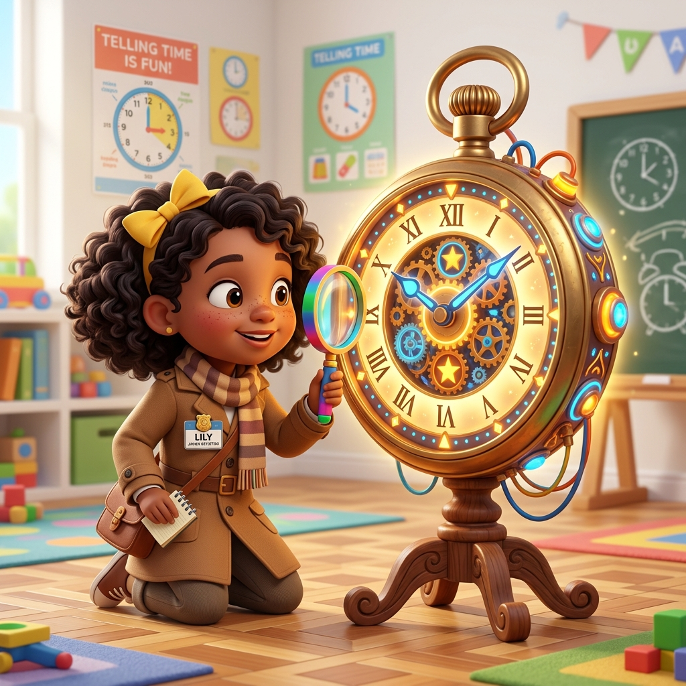
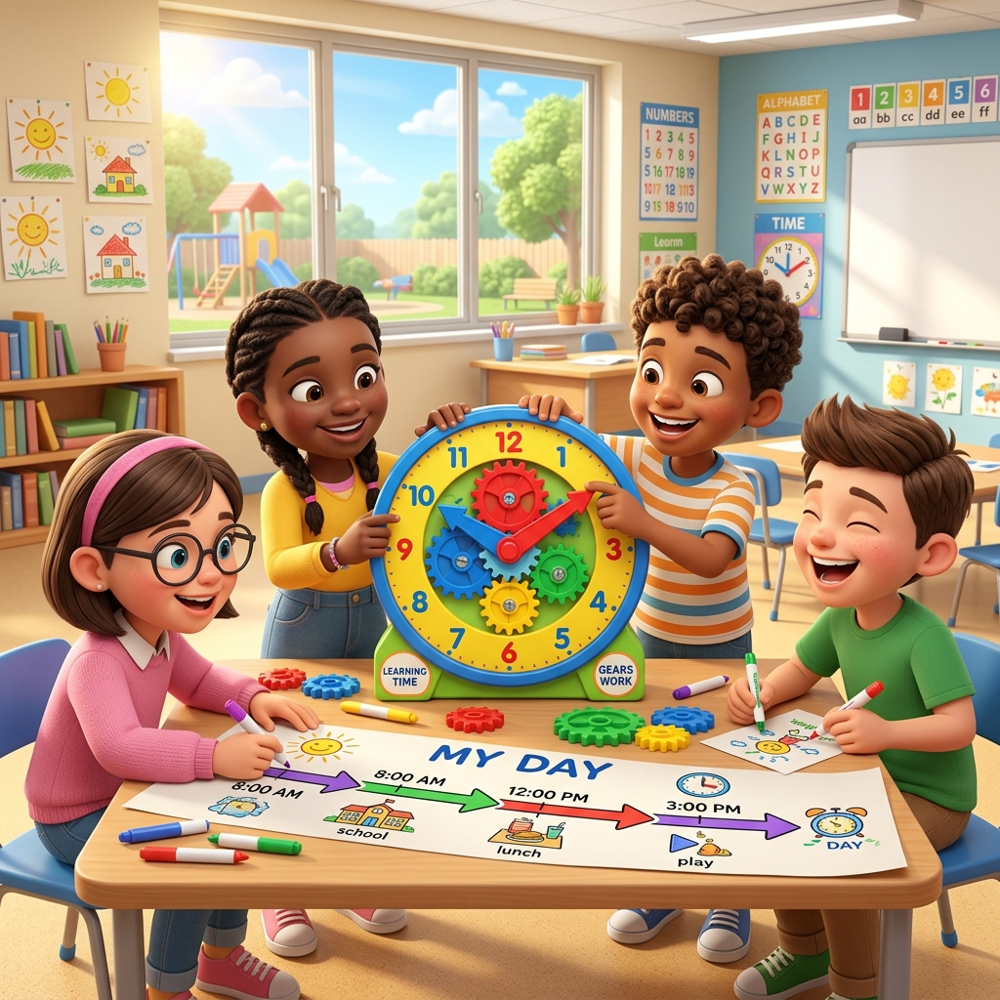

แผนการจัดกิจกรรมคณิตศาสตร์เชิงรุก เรื่อง “โจทย์ปัญหาเกี่ยวกับเวลาและระยะเวลา” ป.4 (ทบทวนสำหรับ ป.6) ที่มุ่งขจัดปัญหาการลบยืมเลขฐานเวลาคลาดเคลื่อน และสร้างความคิดอย่างเป็นภาพด้วยแบบจำลองสะพานเวลา
เมื่อตั้งลบเวลา เช่น \(19:15 - 17:45\) น. นักเรียนมักยืมชั่วโมงไป \(1\) ชั่วโมง แต่กลับเขียนจำนวนนาทีเพิ่มขึ้นเป็น \(115\) (บวก \(100\) นาทีแบบปกติ) แทนที่จะเป็น \(75\) นาที (\(15 + 60\))
สับสนการนับระยะเวลาที่ทับซ้อนจุดกึ่งกลางชั่วโมงและจุดข้ามวันหรือคาบเวลาในการทำข้อสอบปรนัย O-NET
แก้โจทย์ปัญหาโดยตั้งลบเป็นตัวเลขดิบ ๆ ในกระดาษทดโดยไม่รู้ว่าพฤติกรรมการเคลื่อนที่ของเวลาที่แท้จริงเป็นอย่างไร

โจทย์ตัวอย่าง: นัททำการบ้านเวลา 17:45 น. ถึง 19:15 น.

บรรยากาศกลุ่มนักเรียนร่วมมือกันหมุนปรับโมเดลนาฬิกาจำลอง
นักเรียนทำงานกลุ่ม ใช้แบบจำลองนาฬิกาพลาสติกมีฟันเฟืองสัมพันธ์ ช่วยกันบิดเข็มเริ่มต้นที่ 17:45 น. แล้วค่อย ๆ ขยับเดินไปจนถึง 19:15 น. เพื่อเห็นการเปลี่ยนผ่านชั่วโมงจริงทางกายภาพ
ร่างแผนผังเส้นเวลา (Timeline) ลงใบงานกลุ่ม โดยแบ่งสะพานเวลาเป็น 3 สถานีย่อย: 17:45 น. ➔ 18:00 น. ➔ 19:00 น. ➔ 19:15 น. ช่วยขจัดความสับสนเรื่องช่วงคาบเวลากลางกระดาษทด
เขียนตั้งลบในรูปสัญลักษณ์: \(19\text{ ชม. } 15\text{ นาที} - 17\text{ ชม. } 45\text{ นาที}\)
ขอยืมชั่วโมงไปกระจายเป็นนาที: \(18\text{ ชม. } 75\text{ นาที} - 17\text{ ชม. } 45\text{ นาที} = 1\text{ ชม. } 30\text{ นาที}\)
วิเคราะห์: วิธีคิดลบเลขด้วยการยืมฐาน 60 เป็นวิธีหลักในคณิตศาสตร์ แต่ในวันสอบ O-NET การคิดแบบแยกสะพานข้ามชั่วโมง (Timeline Bridge) จะช่วยให้เด็กมองเห็นภาพรวมและคิดหาคำตอบในใจได้อย่างรวดเร็ว แม่นยำ และยังใช้ตรวจสอบความสมเหตุสมผลของการตั้งลบได้ทันทีอีกด้วยครับ
เพื่อให้บิดมือจับคู่สัมพันธ์ช่วงนาทีจริงแบบสัมผัสรูปธรรมได้
แผ่นงานที่ขีดโครงแปลนสะพานเปล่าสำหรับสเก็ตช์บันทึกผล
โจทย์ประยุกต์ทำข้อสอบเดี่ยวเพื่อสรุปประเมินความก้าวหน้า
| ที่ | ชื่อ - นามสกุล นักเรียน | นาฬิกาเฟือง | สเก็ตช์สะพาน | แบบทดสอบคู่ขนาน |
|---|---|---|---|---|
| 1 | เด็กชายปัญญา เลิศล้ำ | 10 | 10 | 9 |
| 2 | เด็กหญิงกัญญา พากเพียร | 10 | 9 | 8 |
| ... | (ความสูงแถวจดบันทึกจริง) | ... | ... | ... |
ช่วยให้นักเรียนจำแนกลบเวลาผ่านความคุ้นเคยเชิงโครงสร้างจริง ไม่พลาดข้อผิดพลาดการขอยืมในวันสอบ
แนวคิดสะพานเวลาช่วยประหยัดเวลาคำนวณและลดโอกาสผิดพลาดได้มากกว่าการตั้งหารหรือคิดคำนวณทศนิยมที่ซับซ้อน
เอกสารจริงจัดรูปแบบถูกต้อง ฟอนต์มาตรฐาน TH Sarabun New ทั้งหมด เรียบร้อยเป็นทางการพร้อมเสนอผู้บริหาร
ใบงานทดสอบเดี่ยวคู่ขนานและตารางบันทึก 1.2 ซม. ช่วยรายงานผลสัมฤทธิ์ตามตัวชี้วัด ค 2.1 ป.4/1 ได้ง่ายและชัดเจน